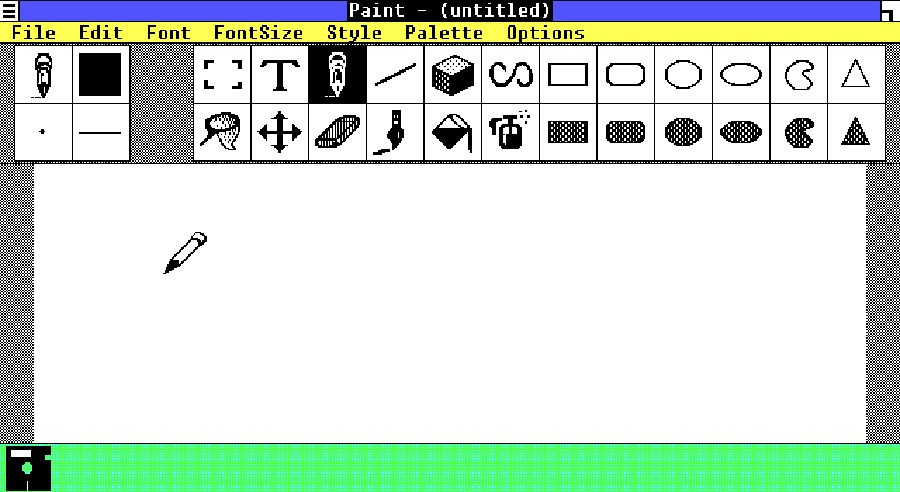

Paint este un instrument care poate fi utilizat pentru desene și editarea simplă a imaginilor. Aplicația Paint a fost introdusă în fiecare versiune Microsoft Windows, începând cu Windows 1.0, care a fost lansată în 1985.
Varianta clasică de Microsoft Paint ar trebui să fie deja pe PC-ul dvs Windows.
- În caseta de căutare de lângă Start, pe bara de activități, tastați paint apoi selectați Paint din lista de rezultate.
- Dacă aveți cea mai recentă versiune de Windows 10 și doriți să încercați ceva nou, deschideți Paint 3D, care oferă noi instrumente 2D și 3D. Este gratuit și gata de lucru.
Microsoft Paint '85
 History of Microsoft Paint 1985 - 2017
| Cronologie |
| Data aparitiei Paint |
Data aparitiei Paint 3D |
| 1985 |
2010 |
| ~~~~~ |